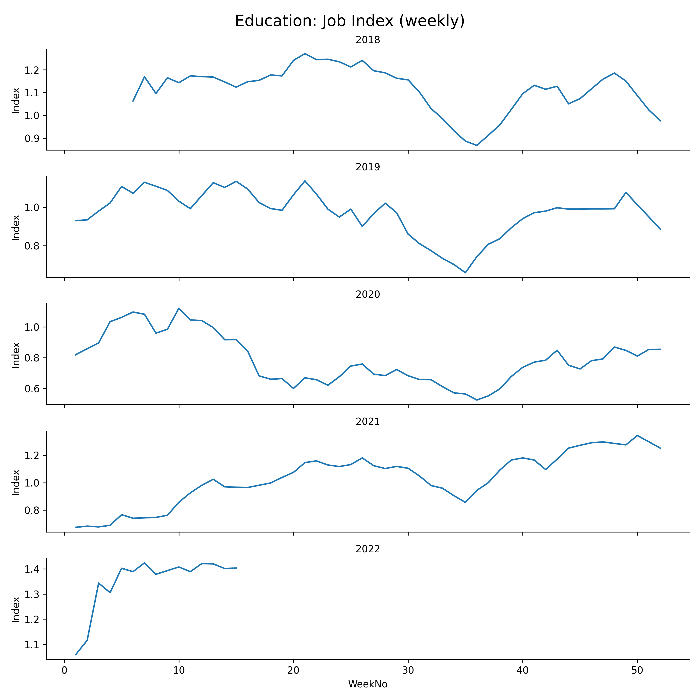
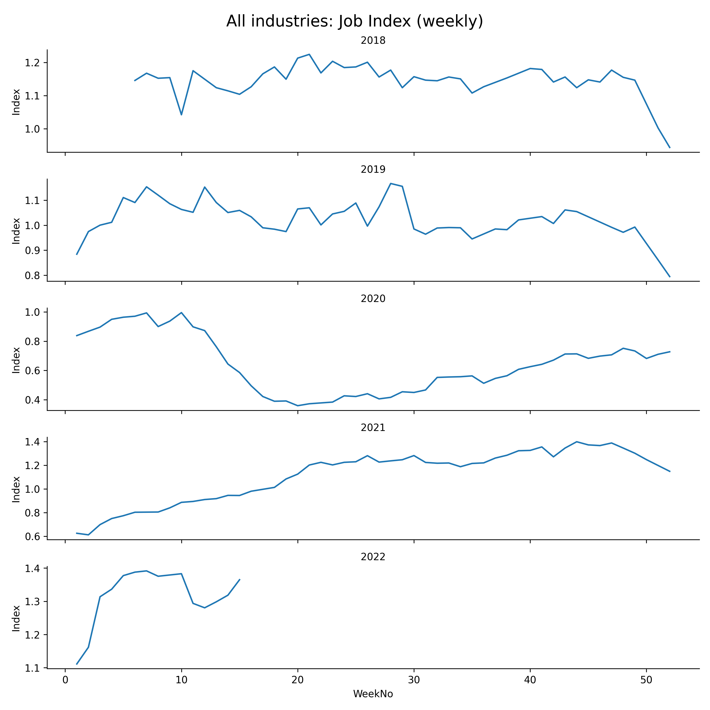
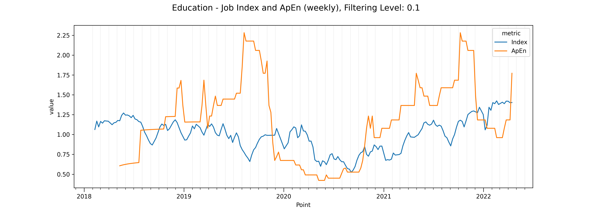
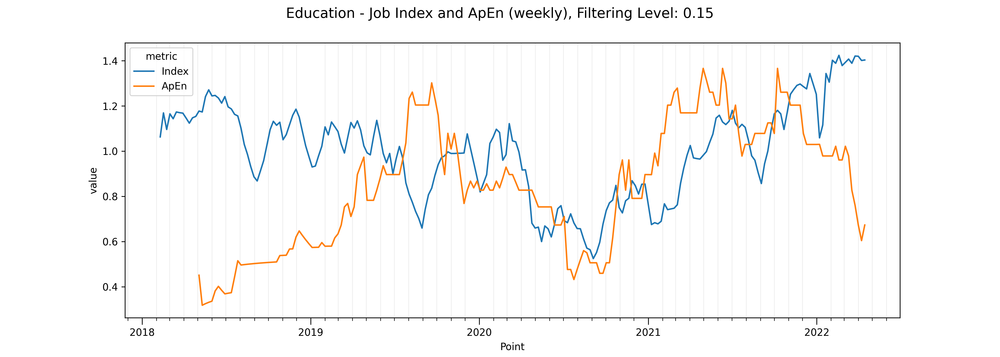
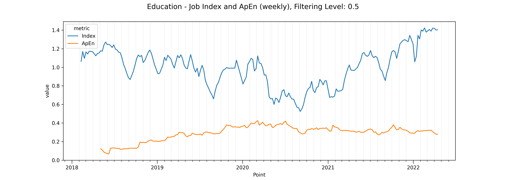

Background
I was asked to provide a tool predicting a change of behaviour in clients that could lead to late payments or bad debt. Looking at methods to analyse time series, I came across the Approximate Entropy (ApEn) statistical method.
Initially conceived to monitor physiological regular data like ECGs, it is sensitive to changes in periodicity. This tool found later applications in other areas such as finance.
The invoicing data at my workplace displayed seasonal changes, but the annual recurrence was quite strong. I had a dataset spanning 22 years. Unfortunately I am not able to use this dataset here.
Dataset
The available dataset from the ONS was compiled with a purpose to understand the impact of Brexit on the job market. It is an online postings index spanning January 2018 to March 2022.
The dataset includes weekly data partitioned by Job Category, and a summary for All Industries.
The summary is a fairly smooth curve without the seasonal features, but the Education subset exhibits that to some extent.
All Industries vs. Education
The Output folder contains stacked plots of the normalised index year on year, where the seasonality of the Education data can be clearly seen.


Approximate Entropy Analysis
The plots for ApEn and Index cover the whole timespan. The Filtering Level has a big impact on the ApEn figures, therefore plots have been created for Education and the summary data for filtering levels 0.1, 0.15, and 0.5.
Filtering Level 0.1
At FL 0.1, ApEn is very noisy.

Filtering Level 0.15
A filtering level of 0.15 works well for the data, smoothing out noise while preserving meaningful features.

Filtering Level 0.5
At FL 0.5, ApEn becomes almost featureless, in sharp contrast to FL 0.1. This demonstrates how sensitive the filtering level is to the apparent complexity and periodicity in the data.

Interpretation
A jump in ApEn indicates an irregularity in periodic data. For perfectly periodic data the ApEn is constant. Interpreting ApEn for data that is somewhat jagged, ApEn alone is insufficient, but combined with sector knowledge and other methods it can be a valuable addition to the toolkit.
Key Events
Here are a couple of events during the time covered by the dataset:
- 2019-07-23: Johnson becomes PM
- 2019-09-09: Parliament prorogued
- 2019-09-24: Supreme Court: prorogation unlawful
- 2019-10-31: Brexit deadline 2
- 2019-12-12: Conservative majority (Johnson)
- 2020-01-31: UK leaves EU
- 2020-12-31: Transition ends
- 2020-03-23: UK lockdown 1
- 2020-11-05: UK lockdown 2
- 2021-01-05: UK lockdown 3
Tech Stack
Python, DuckDb, Seaborn.
I used DuckDb inline to try it out. It is easy to populate, query and query results can be turned into data frames with a single method call.
Further Work
A dataset better suited to this kind of analysis will be used in a future project.
Source
This project is available on GitHub: juergens-projects repository